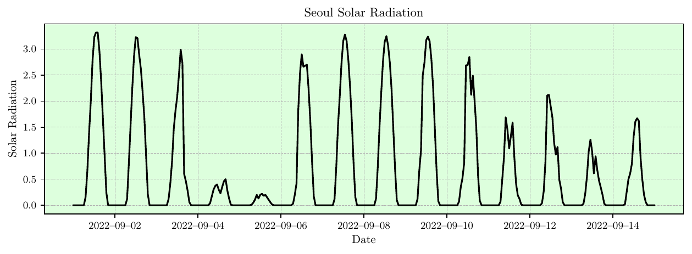
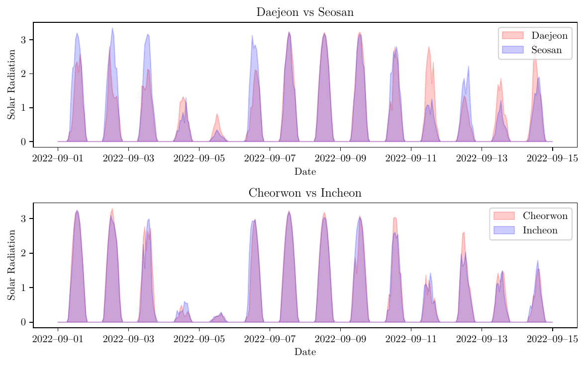
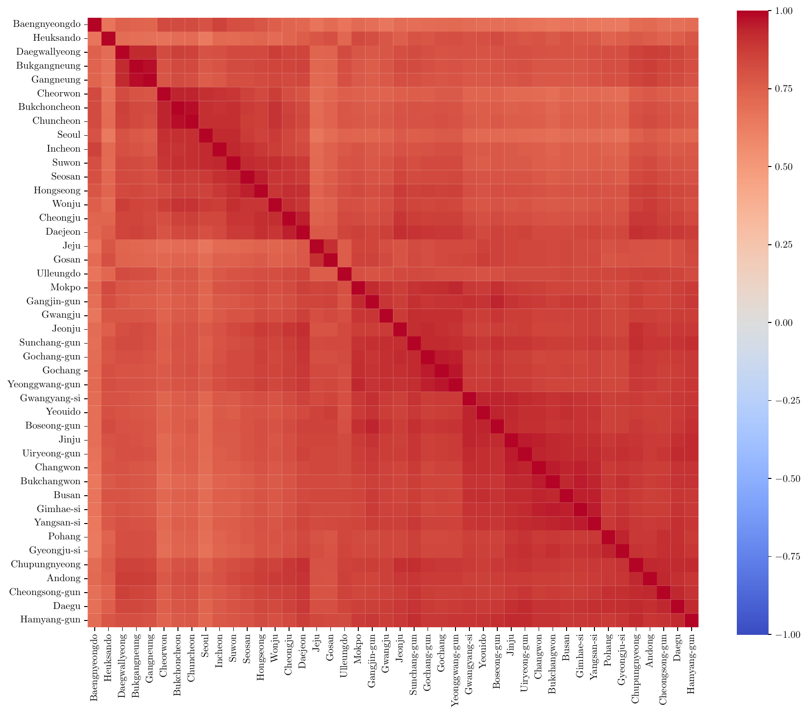
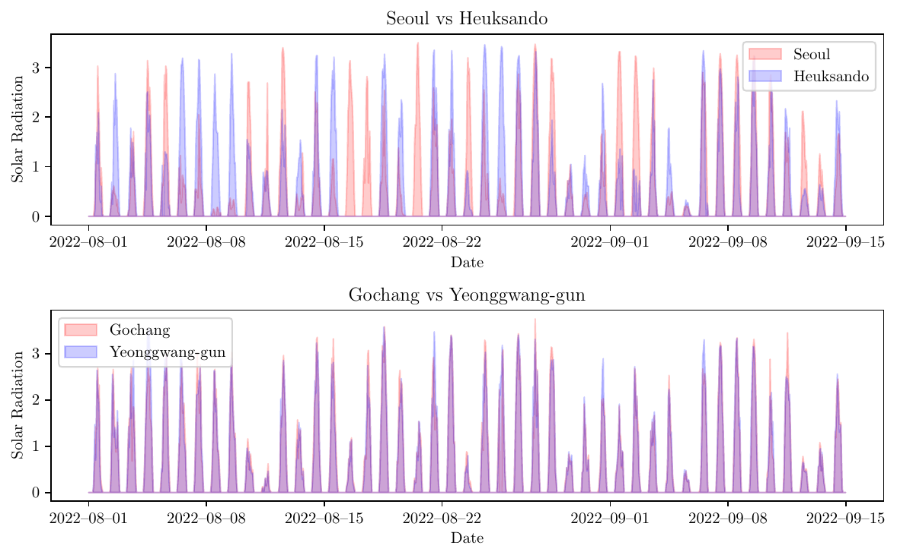
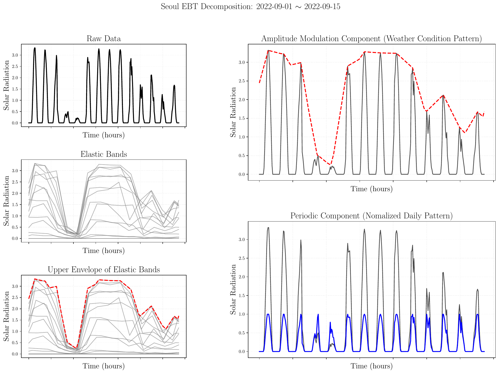
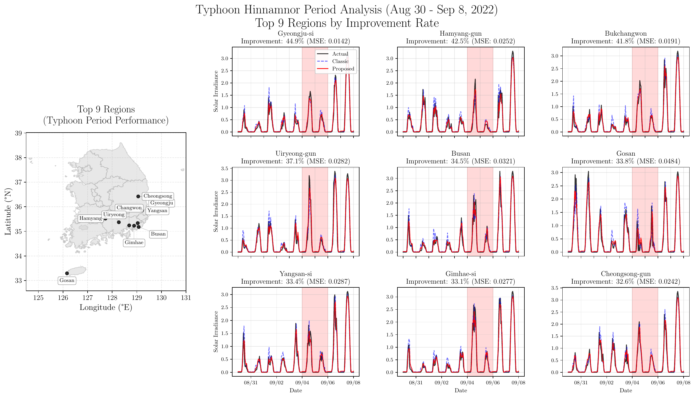

Elastic-Band Transform–Integrated Spatio-Temporal Graph Neural Networks for Solar Radiation Forecasting
다중척도워크샵2026
전북대학교 통계학과
2026-01-07
Table of Contents
- Introduction
- Characteristics / Problem / Solution
- STGNN and Adjacency Matrix Estimation
- Proposed Method
- Multiplicative Decomposition (EBT)
- Overall Framework and Advantages
- Experiments
- Experimental Setup and Results
- Typhoon Hinnamnor Period Analysis
- Discussions
- Key Contributions
- Reviewer Questions
Introduction
Characteristics of Solar Irradiance Data

Simple data, but challenging to analyze
1. Strong periodicity
- Clear daily periodic pattern (sunrise to sunset)
2. Zero-Value Intervals at Night
- Solar irradiance is structurally zero during nighttime
Problem
Traditional time series models are not applicable
- Traditional models such as AR(Auto-Regressive) and ARMA(Auto-Regressive Moving Average) require stationarity assumptions, but the data violates these due to nighttime zero intervals
Deep learning models are also difficult to apply
- LSTM(Long Short-Term Memory), TCN(Temporal Convolutional Network), etc. have no assumption issues, but require excessive training time to accurately learn nighttime zeros
What if we exclude nighttime zero intervals for prediction?
- Sunrise/sunset times vary by season, making uniform exclusion like “7 PM to 6 AM” impossible
- Excluding zero-value intervals risks also excluding low irradiance during cloudy daytime periods
What if we decompose and remove the periodic component?
- Half-wave shape makes sinusoid-based decomposition difficult
- The periodicity is not “added” on top of the signal (additive), so STL(Seasonal-Trend decomposition using Loess), EMD(Empirical Mode Decomposition), Wavelet, etc. cannot cleanly separate it
A Possible Approach (Previous Work)
Rather than predicting the next time point from previous observations, it is more reasonable to first predict whether the sun will be up at the next time point, and then predict solar irradiance conditional on the sun being up.
Key Insight
- Treat solar irradiance prediction as a two-stage problem:
- Is the sun up or not?
- If up, what is the irradiance level?
Prior Research (Lee et al., 2021)
- Introduced a latent variable \(Z_t \in \{0, 1\}\) to represent sun-up status
- Proposed a prediction model using the EM(Expectation-Maximization) algorithm to jointly estimate the latent state and irradiance
This Study: Spatio-Temporal Extension

From single time series to multiple regions
- Previous work: prediction for a single location
- This study: simultaneous prediction for 44 stations across Korea
Data
- Hourly solar irradiance from 44 weather stations
- Approximately 107 days of observations
Modeling as a Graph
- \(\mathcal{G}_t = (\mathcal{V}, \mathbf{A}, \{y_{v,t}\})\)
- \(\mathcal{V}\): set of 44 stations (nodes)
- \(\mathbf{A}\): adjacency matrix representing connectivity between stations
- \(y_{v,t}\): solar irradiance at station \(v\) and time \(t\)
Related Works
Solar Irradiance Forecasting: Single-Site Models
Deep learning approaches for individual locations
- LSTM(Long Short-Term Memory) (Hochreiter & Schmidhuber, 1997), CNN-LSTM (Agga et al., 2021), TCN(Temporal Convolutional Network) (Bai et al., 2018)
- Temporal Fusion Transformer (Lim et al., 2021): state-of-the-art in multi-horizon forecasting
Limitation
- Cannot explicitly model spatial correlations across multiple measurement stations
- Solar irradiance is affected by cloud movement, atmospheric circulation, and topography
- Single-site models miss these spatial dependencies
Why STGNN is a Natural Choice
STGNN(Spatio-Temporal Graph Neural Network)
- Represent stations as nodes, learn spatial and temporal dynamics simultaneously
- Successful in traffic (Li et al., 2017; Yu et al., 2017), time series (Wu et al., 2019, 2020), network dynamics (Cui et al., 2020)
STGNN for Solar/PV Forecasting
- Spatiotemporal GNN(st-GNN) for PV performance prediction (Khodayar et al., 2021): 316 systems, outperforms temporal-only models
Challenges in Graph Construction
Challenges in Applying STGNN
Key Issue: STGNN cannot be directly applied to solar irradiance data
Absence of Adjacency Matrix \(\mathbf{A}\)
- STGNN typically assumes that node connectivity information \(\mathbf{A}\) is given
- However, this is generally not provided information
| Domain | Adjacency Matrix \(\mathbf{A}\) |
|---|---|
| Traffic Networks | Road connectivity is clearly given |
| Weather Observation Networks | Regional connectivity is not given |
Therefore, \(\mathbf{A}\) must be estimated
Estimating \(\mathbf{A}\) Method 1: Distance-Based

Distance-Based Estimation
- Assume nearby regions have similar solar irradiance
But this assumption often fails
- Even if distance is close, different terrain leads to different climate characteristics
| Region Pair | Distance | Pattern Similarity |
|---|---|---|
| 대전-서산 | 96.2 km | Low |
| 철원-인천 | 94.9 km | High |
Similar distance does not guarantee similar patterns
Estimating \(\mathbf{A}\) Method 2: Correlation-Based

Correlation-Based Estimation
- Correlation matrix of solar irradiance among 44 stations
Problem
- Most pairs show very high correlation
- Even the lowest correlation is 0.64 — unexpectedly high
- Much higher than intuitively expected
- Does not match actual climatic similarity between regions
Visualization of Spurious Correlation

| Region Pair | Correlation | Actual Pattern |
|---|---|---|
| 고창–영광 | 0.9681 | High similarity |
| 서울–흑산도 | 0.6422 | Nearly opposite patterns |
서울–흑산도
- Patterns appear nearly negatively correlated
- Yet the correlation coefficient is 0.64 — very high
Problem
- If we apply a model directly, 서울 prediction would consider 흑산도 with weight 0.6
- This might be useful for nighttime zeros, but useless for daytime prediction
Proposed Method
Proposed Method: Multiplicative Decomposition
Our Goal: Decomposing Periodicity
- Spurious correlation arises due to the periodic component (nighttime zeros). The correlation we intuitively expect reflects similarity excluding periodicity
- If we can separate the periodic component from the signal, the problem may be resolved
Preliminary: Signal decomposition is not limited to additive models
\[\cos(58\pi t) + \cos(62\pi t) = 2\cos(60\pi t) \cdot \cos(2\pi t)\]
- Left-hand side: Additive model (sum of two frequency components)
- Right-hand side: Multiplicative model (carrier × envelope)
Decompose solar irradiance multiplicatively
\[y_{v,t} = y_{v,t}^U \times y_{v,t}^P\]
- \(y_{v,t}^U\): Climate component — reflects weather conditions (upper envelope)
- \(y_{v,t}^P\): Periodic component — sunrise/sunset pattern (normalized daily cycle, \(\in [0,1]\))
EBT Decomposition Process
Figure: EBT decomposition process. Left: Elastic bands with τ=24 and upper envelope extraction. Right: Amplitude modulation \(y^U\) (top) and periodic component \(y^P\) (bottom).
Solved via EBT(Elastic-Band Transform) (Choi & Oh, 2023, 2024)
- Left: Construct elastic bands with \(\tau=24\) hourly intervals → extract upper envelope
- Top right: Climate component \(y_{v,t}^U\) — maximum achievable irradiance given weather
- Bottom right: Periodic component \(y_{v,t}^P\) — normalized sunrise/sunset pattern
Correlation Structure After Decomposition

Figure: Correlation structure comparison after decomposition. \(y^P\): Dense (nationwide similarity). \(y^U\): Sparse (climatologically similar regions only).
Decomposition works well!
- Periodic component \(y^P\): Correlation matrix becomes denser — nearly identical nationwide (\(r \approx 1\))
- Climate component \(y^U\): Correlation matrix becomes sparser — high correlation only among climatically similar regions
Overall Framework

Figure: Overall framework. Decompose with EBT, apply STGNN to each component separately, then recombine predictions.
Apply STGNN to each decomposed component, then recombine
\[\hat{y}_{v,t+h} = \hat{y}_{v,t+h}^U \times \hat{y}_{v,t+h}^P\]
Advantages of the Proposed Method
1. Reasonable Graph Connectivity
- Periodic \(y^P\) → Dense graph: Sunrise/sunset pattern similar across all regions
- Climate \(y^U\) → Sparse graph: Only climatically similar regions matter
2. Easier Prediction
- Periodic component: Highly regular → easy for the model to learn
- Climate component: Removing periodicity simplifies the signal → easier to predict
3. Component-Specific Hyperparameter Optimization
| Component | Optimal Lag | Number of Filters |
|---|---|---|
| Periodic \(y^P\) | lag = 24 (full day) | More filters needed |
| Climate \(y^U\) | lag = 4 (short-term sufficient) | Fewer filters sufficient |
Experiments
STGNN Architectures Used in Experiments
Core idea: Replace standard matrix multiplication with graph convolution
\[\mathbf{h}_t = \sigma\left( \mathbf{W} \cdot \text{GraphConv}(\mathbf{X}_t, \mathbf{A}) + \mathbf{U} \cdot \mathbf{h}_{t-1} \right)\]
- \(\mathbf{X}_t \in \mathbb{R}^{N \times F}\): input features at time \(t\) (\(N\): nodes, \(F\): features)
- \(\mathbf{A} \in \mathbb{R}^{N \times N}\): adjacency matrix, \(\mathbf{h}_t\): hidden state
- \(\mathbf{W}, \mathbf{U}\): learnable weight matrices, \(\sigma\): activation function
STGNN Architectures Used in Experiment
Spectral Convolution (GConvGRU/GConvLSTM, T-GCN):
\[\mathbf{X} \star_{\mathcal{G}} \mathbf{g} = \mathbf{U} \mathbf{g}_\theta \mathbf{U}^\top \mathbf{X} \approx \sum_{k=0}^{K-1} \theta_k T_k(\tilde{\mathbf{L}}) \mathbf{X}\]
- \(\mathbf{L} = \mathbf{U} \mathbf{\Lambda} \mathbf{U}^\top\): eigen-decomposition of graph Laplacian
- \(T_k\): Chebyshev polynomial of order \(k\), \(K\): polynomial order
Diffusion Convolution (DCRNN):
\[\mathbf{X} \star_{\mathcal{G}} \mathbf{g} = \sum_{j=0}^{J-1} \left( \theta_j \mathbf{P}^j + \theta_j' (\mathbf{P}^\top)^j \right) \mathbf{X}\]
- \(\mathbf{P} = \mathbf{D}^{-1}\mathbf{A}\): random walk transition matrix (\(\mathbf{A}\): adjacency, \(\mathbf{D}\): degree)
- \(J\): diffusion steps (hops)
STGNN Architectures Used in Experiment
| Model | Temporal | GNN Layer | Order |
|---|---|---|---|
| GConvGRU | GRU | Chebyshev | \(K \geq 2\) |
| GConvLSTM | LSTM | Chebyshev | \(K \geq 2\) |
| T-GCN | GRU | GCN | \(K = 1\) |
| DCRNN | GRU | DiffConv | \(J \geq 2\) |
References: Seo et al. (2018), Zhao et al. (2019), Li et al. (2017), Rozemberczki et al. (2021)
Experimental Setup
- Data: 44 weather stations in Korea, approximately 107 days of hourly observations
- Data split: Training 80% / Test 20%
- Test period event: Typhoon Hinnamnor in early September 2022 (National Institute of Informatics, 2022)
Comparison of three prediction strategies
| Strategy | Description |
|---|---|
| Classic | Direct prediction of raw time series with a single STGNN |
| Proposed \((L,L)\) | Apply same lag to both components after EBT decomposition |
| Proposed \((4,L)\) | Climate component lag=4, periodic component lag=\(L\) |
Experimental Results (MSE)
| Lag | F | Classic | Proposed (L,L) | Proposed (4,L) |
|---|---|---|---|---|
| 8 | 8 | 0.0535±0.0011 | 0.0430±0.0021 | 0.0419±0.0007 |
| 8 | 16 | 0.0537±0.0012 | 0.0413±0.0008 | 0.0408±0.0010 |
| 8 | 24 | 0.0535±0.0011 | 0.0416±0.0010 | 0.0404±0.0007 |
| 8 | 32 | 0.0541±0.0005 | 0.0408±0.0012 | 0.0400±0.0003 |
| 12 | 8 | 0.0534±0.0012 | 0.0438±0.0013 | 0.0426±0.0006 |
| 12 | 16 | 0.0544±0.0008 | 0.0426±0.0010 | 0.0416±0.0004 |
| 12 | 24 | 0.0548±0.0008 | 0.0423±0.0017 | 0.0415±0.0004 |
| 12 | 32 | 0.0549±0.0007 | 0.0427±0.0017 | 0.0411±0.0004 |
| 24 | 8 | 0.0657±0.0023 | 0.0512±0.0016 | 0.0461±0.0013 |
| 24 | 16 | 0.0662±0.0018 | 0.0499±0.0029 | 0.0471±0.0007 |
| 24 | 24 | 0.0675±0.0024 | 0.0507±0.0026 | 0.0470±0.0008 |
| 24 | 32 | 0.0677±0.0010 | 0.0503±0.0013 | 0.0472±0.0007 |
| Lag | F | Classic | Proposed (L,L) | Proposed (4,L) |
|---|---|---|---|---|
| 8 | 8 | 0.0518±0.0006 | 0.0601±0.0551 | 0.0416±0.0006 |
| 8 | 16 | 0.0518±0.0007 | 0.0418±0.0005 | 0.0408±0.0006 |
| 8 | 24 | 0.0519±0.0004 | 0.0416±0.0007 | 0.0405±0.0005 |
| 8 | 32 | 0.0525±0.0004 | 0.0419±0.0010 | 0.0402±0.0004 |
| 12 | 8 | 0.0524±0.0007 | 0.0437±0.0010 | 0.0419±0.0006 |
| 12 | 16 | 0.0530±0.0008 | 0.0433±0.0013 | 0.0419±0.0004 |
| 12 | 24 | 0.0534±0.0005 | 0.0427±0.0010 | 0.0418±0.0006 |
| 12 | 32 | 0.0534±0.0005 | 0.0425±0.0009 | 0.0419±0.0005 |
| 24 | 8 | 0.0618±0.0019 | 0.0487±0.0027 | 0.0460±0.0009 |
| 24 | 16 | 0.0626±0.0013 | 0.0498±0.0028 | 0.0461±0.0007 |
| 24 | 24 | 0.0641±0.0016 | 0.0468±0.0017 | 0.0466±0.0007 |
| 24 | 32 | 0.0644±0.0013 | 0.0486±0.0030 | 0.0463±0.0008 |
| Lag | F | Classic | Proposed (L,L) | Proposed (4,L) |
|---|---|---|---|---|
| 8 | 8 | 0.1297±0.0011 | 0.1214±0.0034 | 0.1343±0.0371 |
| 8 | 16 | 0.1295±0.0007 | 0.1245±0.0074 | 0.1273±0.0084 |
| 8 | 24 | 0.1307±0.0008 | 0.1244±0.0032 | 0.1265±0.0068 |
| 8 | 32 | 0.1314±0.0007 | 0.1250±0.0061 | 0.1300±0.0087 |
| 12 | 8 | 0.1312±0.0010 | 0.1215±0.0022 | 0.1221±0.0037 |
| 12 | 16 | 0.1319±0.0008 | 0.1217±0.0016 | 0.1252±0.0065 |
| 12 | 24 | 0.1322±0.0006 | 0.1252±0.0018 | 0.1262±0.0059 |
| 12 | 32 | 0.1328±0.0007 | 0.1256±0.0026 | 0.1261±0.0030 |
| 24 | 8 | 0.1366±0.0016 | 0.1506±0.0125 | 0.1308±0.0037 |
| 24 | 16 | 0.1388±0.0026 | 0.1749±0.0193 | 0.1340±0.0052 |
| 24 | 24 | 0.1391±0.0013 | 0.1732±0.0241 | 0.1379±0.0040 |
| 24 | 32 | 0.1402±0.0022 | 0.1710±0.0182 | 0.1391±0.0044 |
| Lag | F | Classic | Proposed (L,L) | Proposed (4,L) |
|---|---|---|---|---|
| 8 | 8 | 0.0577±0.0010 | 0.0829±0.0484 | 0.0557±0.0042 |
| 8 | 16 | 0.0594±0.0015 | 0.0667±0.0080 | 0.0540±0.0020 |
| 8 | 24 | 0.0603±0.0011 | 0.0667±0.0097 | 0.0526±0.0022 |
| 8 | 32 | 0.0595±0.0007 | 0.0655±0.0047 | 0.0529±0.0014 |
| 12 | 8 | 0.0583±0.0011 | 0.1085±0.0604 | 0.0536±0.0022 |
| 12 | 16 | 0.0589±0.0007 | 0.1267±0.0648 | 0.0535±0.0010 |
| 12 | 24 | 0.0606±0.0010 | 0.0978±0.0435 | 0.0549±0.0047 |
| 12 | 32 | 0.0610±0.0011 | 0.0971±0.0438 | 0.0551±0.0034 |
| 24 | 8 | 0.0815±0.0077 | 0.1324±0.0262 | 0.0631±0.0047 |
| 24 | 16 | 0.0872±0.0055 | 0.1403±0.0331 | 0.0669±0.0048 |
| 24 | 24 | 0.0847±0.0041 | 0.1366±0.0346 | 0.0658±0.0034 |
| 24 | 32 | 0.0885±0.0032 | 0.1357±0.0258 | 0.0656±0.0052 |
Typhoon Hinnamnor Period
Typhoon Hinnamnor (2022): Super typhoon that struck Korea on Sep 5-6, 2022. One of the strongest typhoons to affect Korea, causing significant damage to the southeastern region. (Digital Typhoon)
Figure: Typhoon Hinnamnor period analysis. Top 9 regions with highest MSE reduction along the typhoon path.
Regional Performance Improvement During Typhoon Period
| # | Region | Classic | Proposed | MSE Reduction |
|---|---|---|---|---|
| 1 | 경주 | 0.0791 | 0.0436 | 44.9% |
| 2 | 함양 | 0.0596 | 0.0343 | 42.5% |
| 3 | 창원 | 0.0644 | 0.0375 | 41.8% |
| 4 | 의령 | 0.0561 | 0.0353 | 37.1% |
| 5 | 부산 | 0.0753 | 0.0493 | 34.5% |
| 6 | 고산 | 0.0388 | 0.0257 | 33.8% |
| 7 | 양산 | 0.0746 | 0.0497 | 33.4% |
| 8 | 김해 | 0.0725 | 0.0485 | 33.1% |
| 9 | 청송 | 0.0539 | 0.0363 | 32.6% |
→ 32-45% MSE reduction along the typhoon path (southeastern Korean Peninsula)
Discussions
Key Contributions
1. Multiplicative Decomposition Framework
- Introduced \(y = y^U \times y^P\) decomposition model for solar irradiance
- Resolved spurious correlation problem caused by periodicity
2. Asymmetric Component Modeling
- Independent graph structures and hyperparameters tailored to each component
- Climate: lag=4, sparse / Periodic: lag=24, dense
3. Robustness Under Extreme Weather
- 32-45% MSE reduction during Typhoon Hinnamnor period
Future Work
- External data integration: satellite cloud imagery, numerical weather prediction, atmospheric reanalysis
- Hybrid modeling: replace \(y^P\) with astronomical calculations, focus learning capacity on \(y^U\)
Reviewer Question 1: Why Not Other Decomposition Methods?
“Comparison with alternative decomposition techniques such as STL, EMD, and Wavelet?”
| Method | Decomposition Type | Result |
|---|---|---|
| STL | Additive | Daily component remains in residual |
| EMD | Additive | Periodic component not isolated to specific IMF |
| Wavelet | Additive | Periodic energy dispersed across multiple levels |
| EBT | Multiplicative | Clean two-component separation |
→ Additive methods fail to cleanly separate components. Only EBT achieves clean separation
Decomposition Comparison: Additive

Figure: Additive decomposition comparison. EBT (top) vs STL, EMD, Wavelet.
Decomposition Comparison: Multiplicative

Figure: Multiplicative decomposition comparison via log-transform. STL, EMD, Wavelet still fail to cleanly separate components.
Reviewer Question 2: What About Non-STGNN Deep Learning?
“Comparison with LSTM, CNN-LSTM, TCN, etc.?”
Baseline models: TCN, LSTM, CNN-LSTM (Agga et al., 2021; Bai et al., 2018; Hochreiter & Schmidhuber, 1997)
| Model | MSE | Setting |
|---|---|---|
| TCN | 0.0601±.0012 | L=24 |
| LSTM | 0.0841±.0023 | L=8 |
| CNN-LSTM | 0.0975±.0037 | L=8 |
| Proposed (EBT+STGNN) | 0.0400±.0003 | L=8 |
→ STGNN leveraging spatial information significantly outperforms temporal-only models (33% improvement over TCN)
Thank You
Paper Information
“Spatio-Temporal Graph Neural Networks with Elastic-Band Transform for Solar Radiation Prediction”
Author: Guebin Choi
CMES-Computer Modeling in Engineering & Sciences, 2025
Contact: guebin.choi@jbnu.ac.kr